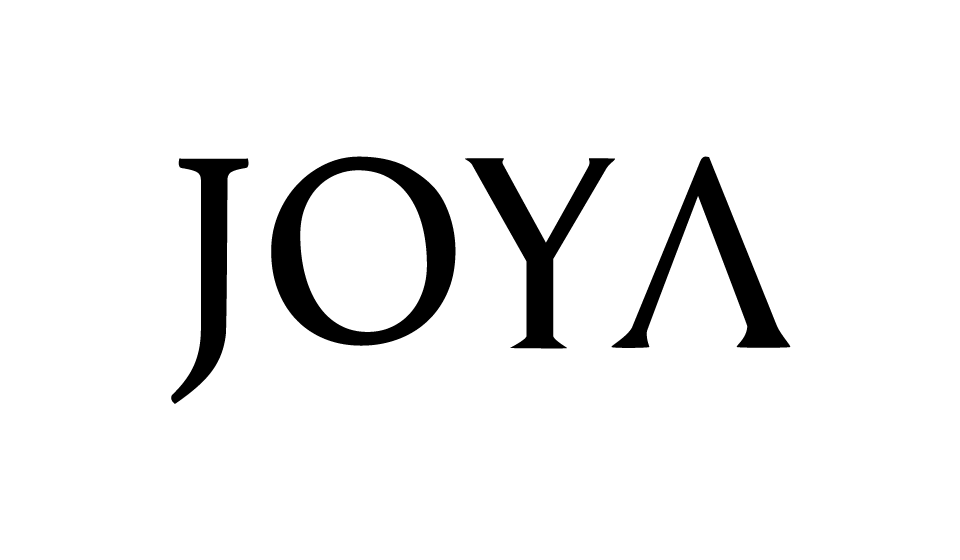

Code Examples:
Processing Generative Art Logo
|
HTML/CSS/JS Ix
|
Processing 3D Projection Mapping
|
C++ for Unreal
|
C++ Principles & Practice
|
Learning Openframeworks Repo
Processing code for generative art logo